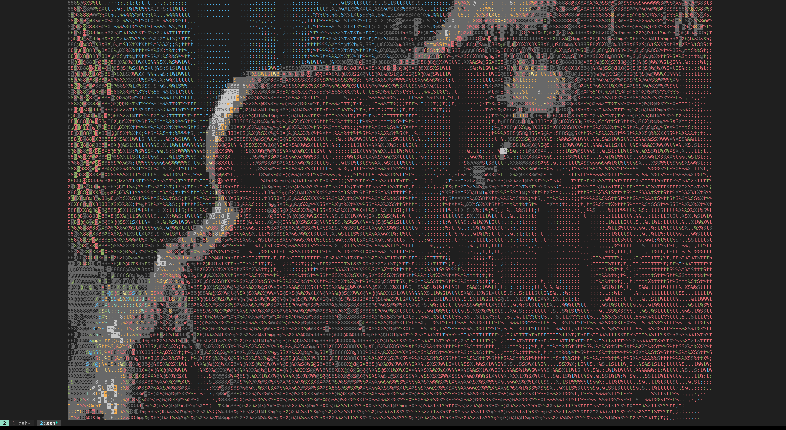

Alacritty Ascii
Alacritty is one of the many lovely developer tools that are springing up as the first flush in the Rust revolution. Its a fantastic terminal that I’m sure I will have more to say about in due time.
As noted, I discovered something lovely while transferring some files the other day. I was moving my small film collection (currently stretching to 7 titles: <INSERT FILMS>) from one computer to another, and I just wanted to sanity check that the transfer had succeeded. So I sshed into the machine ssh work and ran vlc -I dummy ~/films/Mullholland\ Dr.mkv.
Imagine my surprise to see the criterion logo appear, animated before me. Here is a nice still from another film to illustrate: 
You can also look at a copy-paste of the terminal here to prove that it really is ASCII output.
Zooming out, the resolution becomes better and better (text), but it starts to jitter quite badly at a certain size. 
I thought the ssh connection might be a bottleneck, so I went to the computer to try it on one machine. I had that slightly haunted feeling that the magic might disappear, and when I entered the terminal I suddenly wondered >How will I get it to work here? If I run vlc -I dummy ~/filmes/Crash.mkv I’ll just get a window.
but as soon as the thought was there I realised I could just start with ssh localhost. And it worked. I was watching the ‘Universal’ logo barge into my terminal.
But things got even better. I noticed that my keystrokes were even getting sent back to vlc, so I could skip forward, pause and even quit the film (sometimes it gets stuck and I have to killall vlc but so it goes).
After a little sleuthing, I notice that
vlc -I dummy ~/films/film.choiceis interactive, but
vlc ~/films/film.choiceis not. What is this dummy terminal doing after all? Well, the vlc wiki has a little info[^vlc dummy], and they nicely point out that keystrokes are sent back. I find the terminology a little odd, since ‘dummy video output’ is just normal video output, but I think they are looking at it from a gui-makers perspective. And this seems to be the key– with the dummy interface, vlc streams the movie to a window. Alacritty is presumably pretending to be a screen or a window of some sort, in order to pass its work to the GPU, so VLC merrily dumps the video stream in there.
What I would love to know, and I might take some time to investigate, is how is Alacritty mapping the video stream to ASCII? And why?
I will leave this story here for now. I have two things in mind: one, to investigate further over at the Alacritty github and two, to have some people round for a film, run it through Alacritty-ASCII and run the audio through a digital soundcard or some synths, and make a little performance. I’ll update if either of these things transpire.
In the meantime, if you want to try it yourself, I have uploaded a slightly rushed video of the effect in action (the size limit on asciinema was not made with 4k ASCII movies in mind, so no hard feelings). Asciinema cast attached1.
And here is a final zoomed in still to admire. In the attached text you can see how much of a difference the color makes, presumably a lot of the 8s have the same foreground and background color.
Footnotes
https://asciinema.org/a/378193 [^vlc dummy]: https://wiki.videolan.org/Documentation:Modules/dummy/↩︎